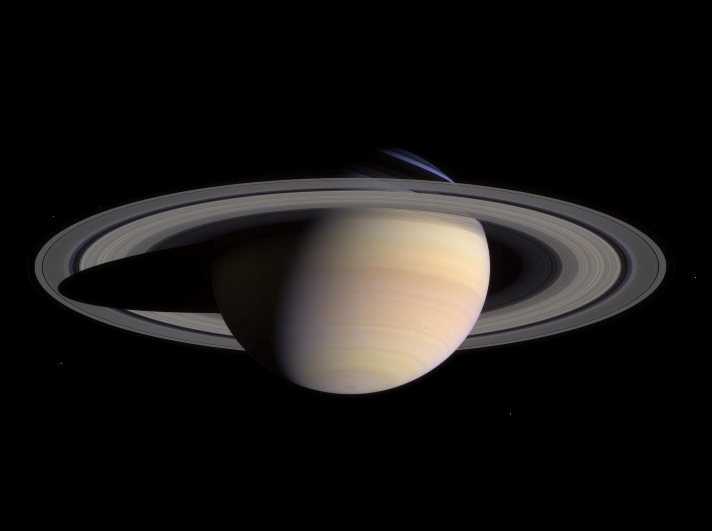

The Ringed Beauty
Saturn is the sixth planet from the Sun and the second-largest in the Solar System. It's famous for its spectacular ring system, which makes it one of the most recognizable planets in our solar system.
Basic Facts
- Type: Gas Giant
- Distance from Sun: 1.4 billion km
- Diameter: 116,460 km (9.5 × Earth)
- Mass: 5.683 × 10²⁶ kg (95 × Earth)
- Surface Temperature: -140°C (cloud tops)
- Orbital Period: 29.46 Earth years
Rings & Ring System
- Ring System: 7 main rings (A-G)
- Ring Composition: Ice particles, rock, dust
- Ring Width: 280,000 km across
- Ring Thickness: Only 10 meters thick
- Ring Age: 100 million years old
- Ring Formation: Destroyed moon or comet
Atmosphere & Weather
- Atmosphere: Hydrogen (96%), Helium (3%)
- Cloud Layers: Ammonia, ammonium hydrosulfide
- Hexagonal Storm: North pole feature
- Wind Speed: Up to 1,800 km/h
- Storm Systems: White spots and storms
- Pressure: 1.3× Earth's at cloud level
Moons & Satellites
- Total Moons: 146 confirmed
- Largest Moon: Titan (larger than Mercury)
- Notable Moons: Enceladus, Rhea, Iapetus
- Titan: Only moon with atmosphere
- Enceladus: Geysers of water ice
- Shepherd Moons: Maintain ring structure
Exploration History
- Pioneer 11: First flyby (1979)
- Voyager Missions: Detailed flybys (1980-1981)
- Cassini-Huygens: Orbiter and lander (2004-2017)
- Huygens Probe: Landed on Titan (2005)
- Cassini Grand Finale: Final orbits (2017)
- Future Missions: Dragonfly to Titan
Unique Characteristics
- Lowest Density: Would float in water
- Fast Rotation: 10.7 hours (equator)
- Flattened Shape: Due to rapid rotation
- Magnetic Field: Weaker than Jupiter's
- Internal Heat: Emits more than receives
- Ring Gaps: Created by moon resonances
Fun Facts
💍 Spectacular Rings
Saturn's rings are so wide they could fit between Earth and the Moon, but are only 10 meters thick.
🌊 Floating Planet
Saturn has the lowest density of any planet - if you could find a big enough ocean, it would float!
🌙 Moon Factory
Saturn has 146 moons, the most of any planet in our solar system, including Titan which is larger than Mercury.
❄️ Hexagonal Storm
Saturn's north pole has a mysterious hexagonal storm that's been raging for decades, with each side longer than Earth's diameter.